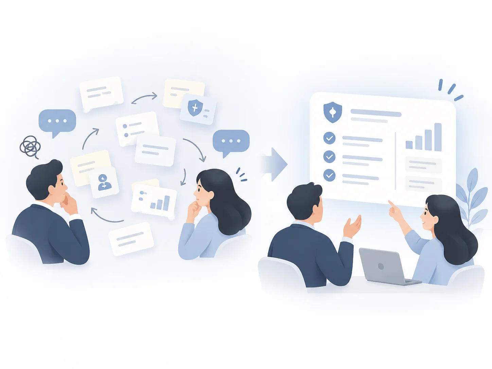
問題一
需求沒有共同起點
沒有共同範本可參考，客戶難以具體表達需求，業務也需要反覆確認方向。
團隊原本想用標準流程加快交付，但我在訪談與交付回顧中發現，真正卡住的是「哪些應該固定、哪些可以保留彈性」。因此我建立「範本＋受控模組化」的交付模型，讓需求更容易收斂，設計與工程也能複用既有成果。
平台原本為了支援不同保險商品與品牌，開放了很多可調整項目，但沒有清楚界定哪些可以改、哪些應該共用。結果每個新客戶案都要重新確認需求範圍，設計與工程也難以沿用既有成果。
這時保險經紀公司 Marsh 要推出車險。時程很趕：只有一個月可以做出決定，並向 Marsh 提出初版。所以兩件事必須同時進行，一邊整理出可重用的框架，一邊直接把它用在 Marsh 的專案上，Marsh 也成為第一個採用的客戶。
我訪談了業務、產品與工程團隊，並比對既有專案的需求對齊與交付紀錄，歸納出三個問題：

沒有共同範本可參考，客戶難以具體表達需求，業務也需要反覆確認方向。
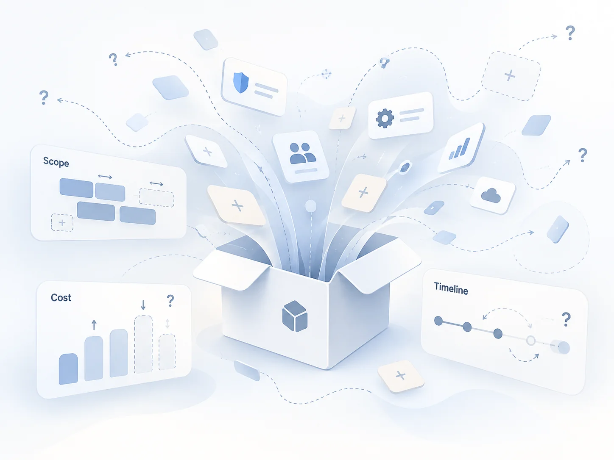
缺少明確的配置邊界，團隊難以判斷哪些功能可以複用、哪些需要額外開發。
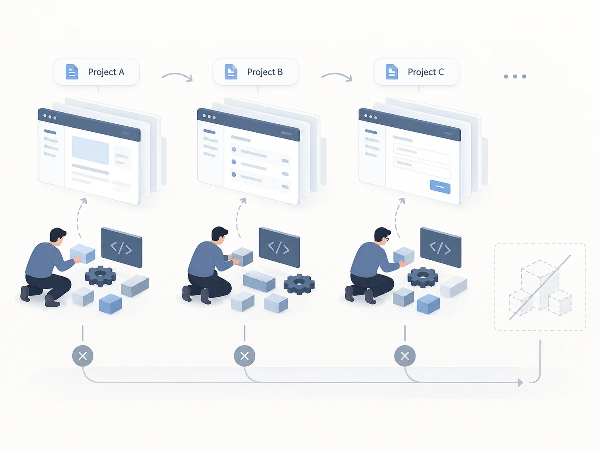
每個新案都要重新設計、估算與開發，既有成果難以轉化為可重用的交付資產。
期限只有一個月，所以我先決定交付的方式，再決定客戶可以調整的範圍；兩者合起來，就是後面說的「框架」。下表是三個問題與兩個決策的對應。
客戶說不清楚要什麼，業務反覆確認方向。
先給一套具體畫面與可選範圍，需求從選項裡收斂，不再從空白談起。
客戶提出修改時，團隊分不出哪些能直接沿用、哪些要額外開發。
可以換的（品牌色、圖片）、只能從現有模組選的、不能動的（流程與版面）。客戶一提出修改，就知道屬於哪一級、要不要額外開發。
每個新案都重新設計、估算與開發。
核心流程與元件共用，差異只發生在預先定義的位置，做過的成果可以直接沿用。
回應背景的問題一（需求沒有共同起點）與問題三（交付無法穩定複用）。
以基礎版本維持核心體驗，
只把可預期差異轉成有限配置。
逐案客製在一個月內做不完；單一標準流程做得完，卻回應不了 Marsh 的品牌與商品需求。這個選項在期限內做得到，之後的客戶也能沿用。
界定可選範圍，避免每次從空白開始談需求。
以基礎版本為主，在預先定義的位置插入、替換或啟用有限選項。
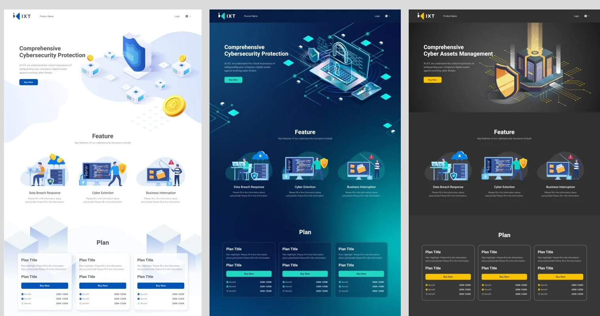
客製化仍然保留，只是分成三個等級。
需求從反覆定義範圍，轉為在具體選項中收斂。
此數字非精確計時。回應背景的問題二（客製沒有清楚邊界），也讓問題三的複用有規則可循。
可調整項目開放太多，團隊仍得為每個客戶逐案修正設計；開放太少，又無法回應必要的品牌與商業差異。
我盤點畫面元素，與產品、工程逐項評估，把差異分為可配置、有限配置與鎖定三個層級。
在既定規則內替換品牌表現，不改變產品核心結構。
把不同專案裡高度重複的樣式與頁面格式整理成模組，之後的客戶從中選配，不重新設計。模組需要時間累積，每做一個專案就補上一些。
維持流程、互動與交付複用所需的核心規則。
這個方向由我主導；每一項要放在哪個層級，則和產品、工程團隊逐項評估後共同決定。
我們用 Figma 的變數劃出「可以換色」的範圍：每個變數對應一個介面用途，每個品牌一組數值。切換之後整套畫面跟著換，不需要逐頁修改。
業務拿到客戶的品牌識別規範後，設計師大約 3 分鐘就能套用顏色，馬上給客戶看哪裡還需要調整。
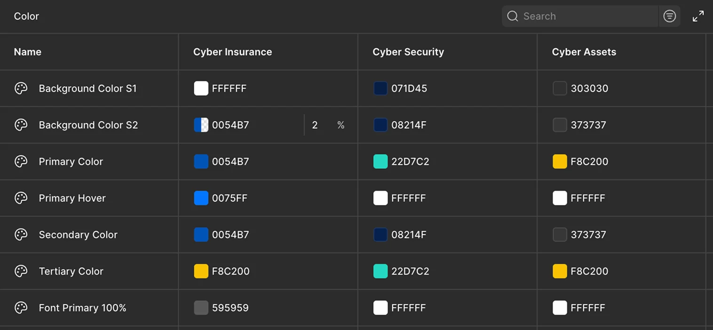
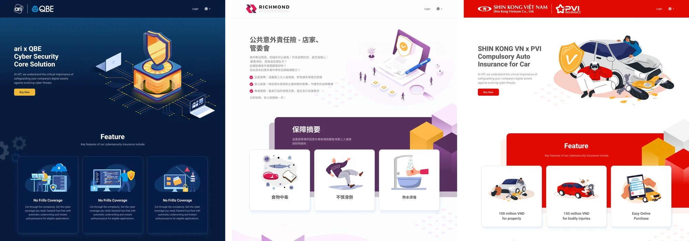
配置邊界與共用規則建立後，新客戶不再從零重新設計。
範本套用到第一個客戶之後，大部分可以直接使用，只有三個地方需要重新設計。
實際操作的人有兩種：買車的車主，以及在展示廳陪車主操作的銷售人員。
沒有帳號，資料不能留存，所以必須一次寫完。
來源：同仁訪談、操作觀察、內部業務訪談、客戶端回饋。
在展示廳的車主沒耐心，流程長就不想做；回到家的車主想先比較方案、和家人討論。
不必先填個人資料，就能看到各家方案與起始保費。
銷售人員要邊操作邊解釋，也常被打斷；自己操作的車主會中途去找資料，又擔心填錯不能改。
步驟列標示做到哪裡；最花心力的放前面，最後一頁可以檢查修改。
這一項和情境無關，是內容要求和開發成本之間的取捨。
逐項列出，版面和其他步驟同寬，不增加開發成本。
三個設計決策照使用者走過的順序說明：首頁 → 後面四個步驟 → 主約與附約頁。
詳細的保險內容，要先有車主與車籍資料才算得出來。照這個限制直接做，流程會是：先填完資料，才顯示保險內容，並在同一頁比較不同保險公司的方案。當時客戶對流程還沒有想法，技術上也有不少問題不知道怎麼解決，所以由我提出做法。
使用者還不信任這個網站，就被要求交出隱私資料；還沒看到任何方案，沒有往下走的理由。
只選車型、年齡區間等基本條件，就先呈現各家的基礎方案與起始保費。
填完資料再選保險公司，每多比較一家，步驟就再拉長一次。
在首頁選定保險公司與方案之後才進入報價，流程長度不會因為多一家而增加。
同一頁要同時連線多家保險公司的報價系統，頁面容易讀取過久；只要其中一家出問題，整頁都無法顯示。
選定方案後才連線那一家的報價系統，讀取更快，其他家出問題也不會影響。
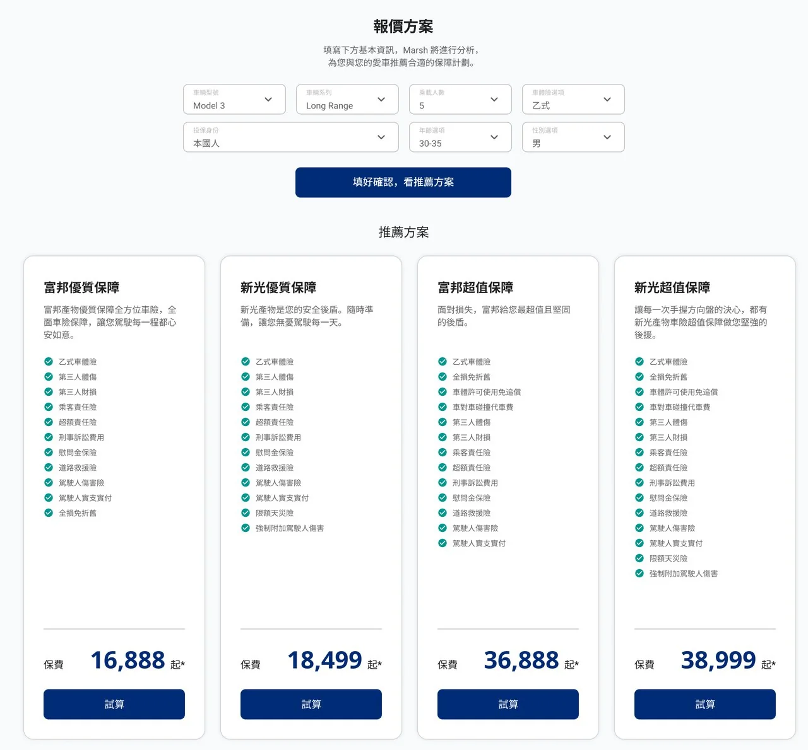
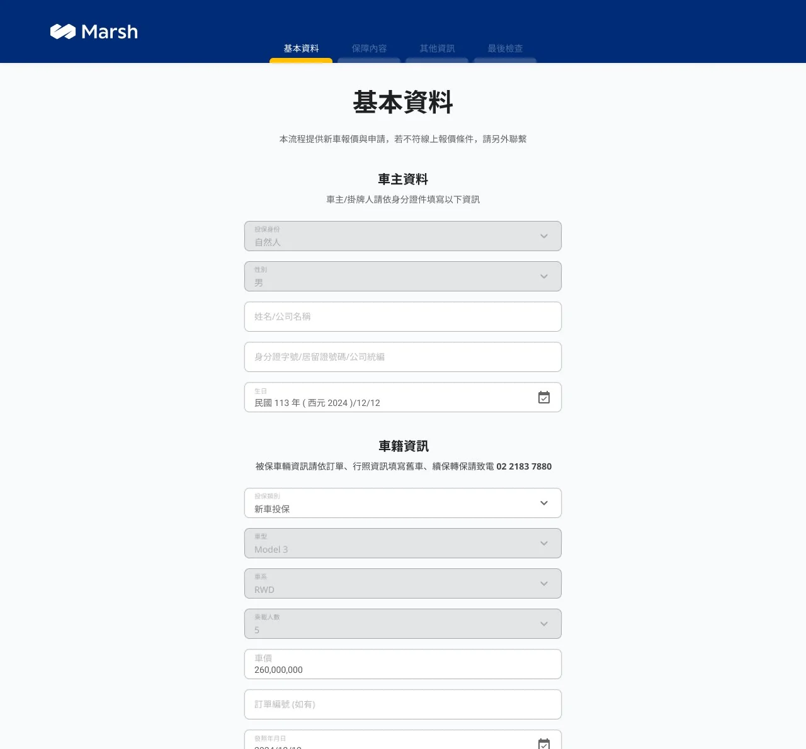
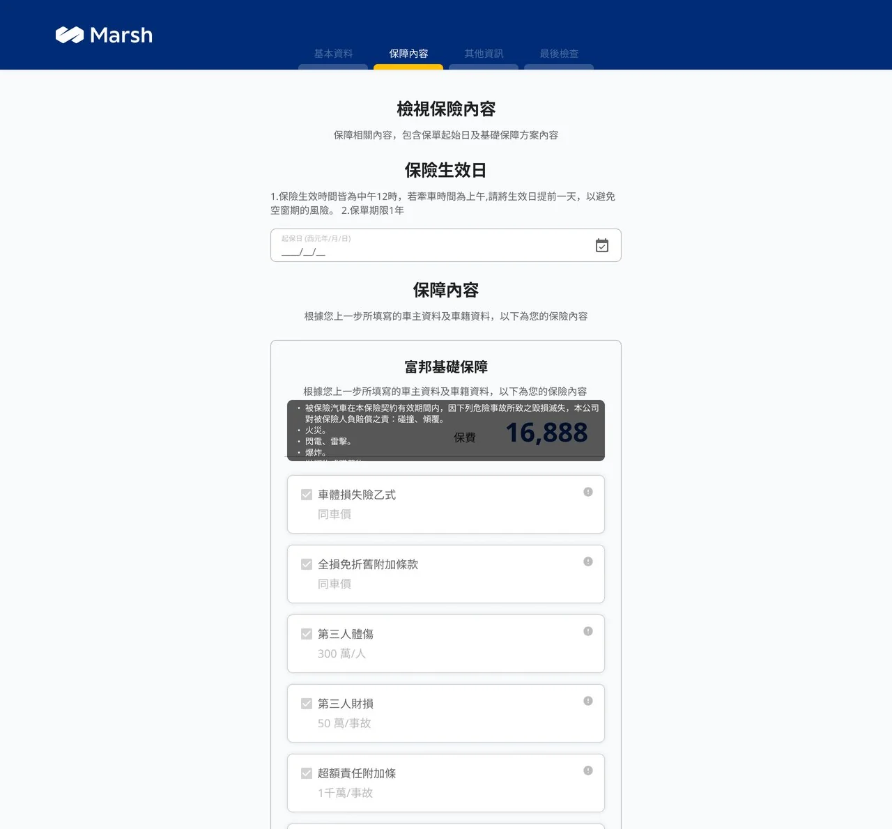
回到範本 首頁的方案比較成為範本的固定區塊，其他客戶只需要替換方案內容與價格。
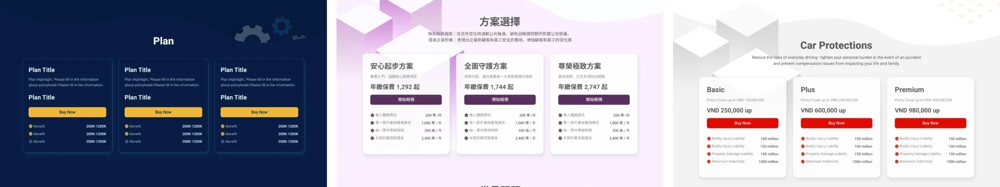
方案搬到首頁之後，接著要決定後面的資料怎麼填。我提出分頁填寫，不把所有欄位放在同一頁。
資料不能留存，使用者得一次寫完。所有欄位放在同一頁，流程看起來很長，使用者容易不耐煩。
報價資料、主約與附約、聯絡資料、確認內容各一頁。上方的步驟列標示現在在哪一步；最後一頁用來檢查，也能回上一步修改。
在展示廳，銷售人員要邊操作邊解釋，過程也常被打斷。所有內容擠在同一頁，很難專注。
銷售人員一頁講一件事；被打斷之後回來，從步驟列就知道做到哪裡。
選主約與附約最花時間，使用者會來回比較。客戶端的回饋也指出，使用者最常在這一步離開。
報價之後馬上選主約與附約，趁使用者還有耐心時完成；聯絡資料留到後面，越填越輕鬆。
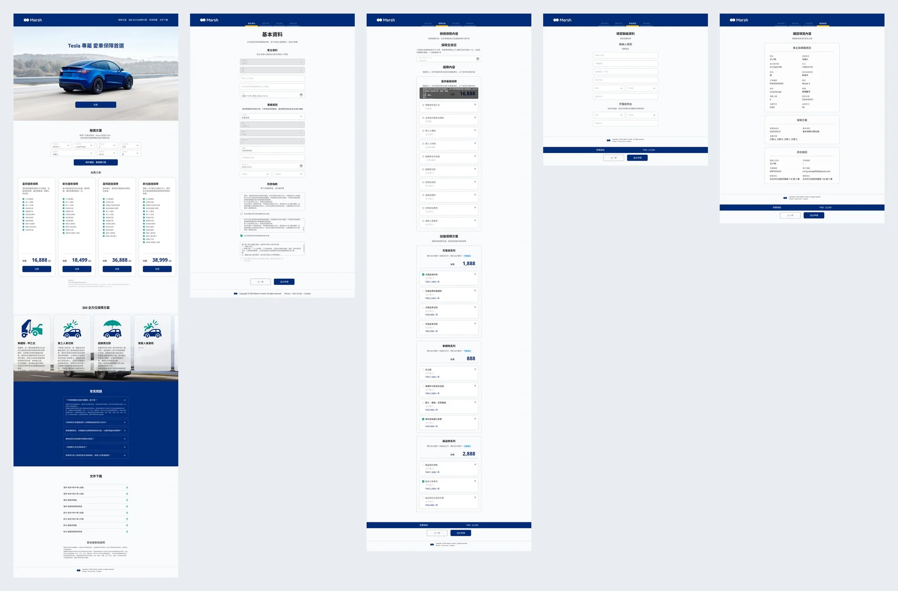
回到範本 分頁填寫與這個順序，成為後續專案沿用的預設流程。
分頁之後，內容最多的是主約與附約這一頁，原本的卡片版面放不下。
保險公司要求主約與附約的每一個項目都要明確列出，卡片只放得下名稱與價格。
主約與附約一項一列，保障內容與保費都看得到。
卡片並排需要比其他步驟更寬的頁面，版面要另外設計與開發。
改成等寬列表，沿用既有版面，不需額外開發。
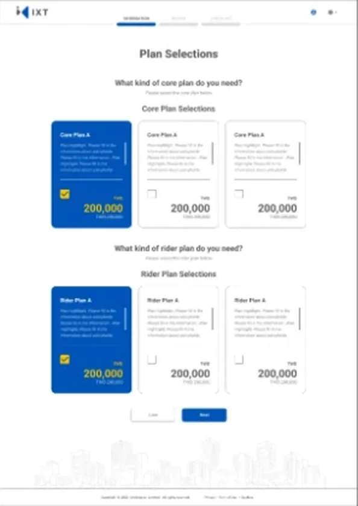
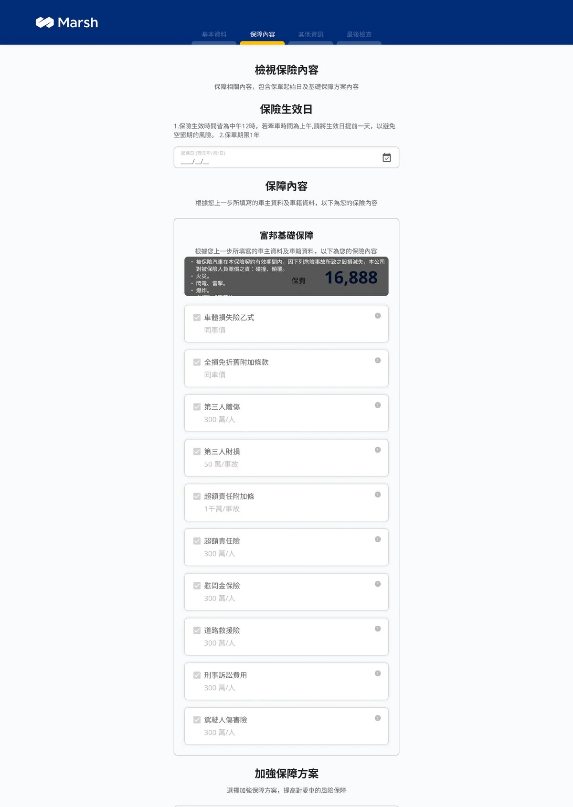
回到範本 列表式的主約與附約頁取代卡片，成為後續專案沿用的預設版面。
這三個設計決策，也是最早放回範本的內容。模組是一個專案一個專案累積出來的，一開始並不齊全；補上之後，後面的客戶不必再重新決定一次。
成果來自框架導入前後的人力與時程比較，不是後續使用者體驗改善的行為成效。
交付時間比的是同一段流程：從需求確認到交出初版，舊流程要 3 個多月，新流程約 1 個月。舊流程的時間花在設計、業務與客戶的溝通，以及開發。人週只計算工程與設計實際投入的時間，所以比日曆上的時間短。設計適配時間為設計師實際工作時間的前後比較。四個企業合作案均已上線。